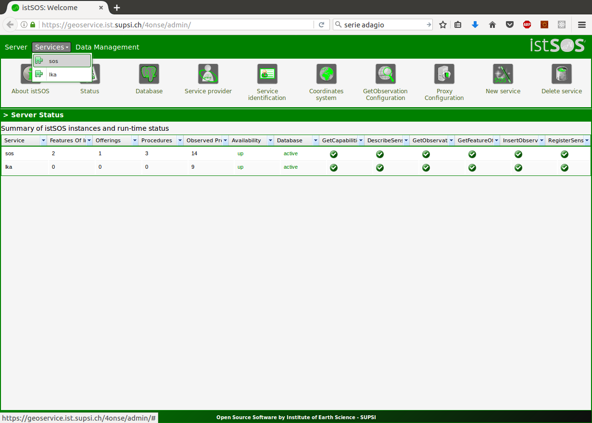
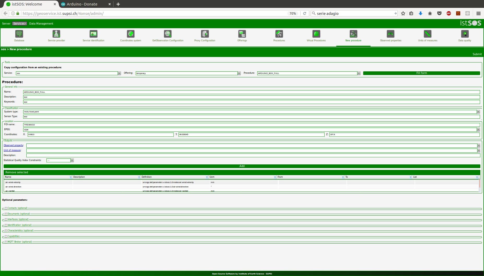

istSOS configuration¶
If you need to get information on istSOS, please refer to the istSOS tutorial to learn what is it and how you can use it.
Open an Internet browser and go to your istSOS server admin page and select your service
 Create a new procedure clicking on the button "New procedure", and add the observed properties in the following order:
- Internal temperature
- Soil humidity
- light
- pressure
- humidity
- temperature
- rainfall
- wind direction
- wind speed
Note
To learn how to create a new observed property follow this link. Even if the soil moisture is not yet included in the 4onse-mod, please add it into the observed properties.
 Fill the form and press <save>.
A Sensor ID (refrred to as PROCEDURE_ID in the next section), is created when the procedure is saved. Please annotate or copy it since it is required in the next operations.
Code uploading¶
Once the 4onse-mod installation is completed and the istSOS configured, you can connect your computer to the arduino with a USB cable and upload the code. This is the step-by-step procedure to follow:
Format the SD card in FAT32, download this
archive, extract and copy it into the SD card root. On the SD card you should now have the following structure:- LOG
- SLOG
- TMP
- config.txt
Note
All the folders must be empty. The config.txt file has the content shown here below:
9600,36,3,2,0,0,0 baud,escape,esc#,mode,verb,echo,ignoreRXAfter this step, remember to insert the micro SD card into the OpenLog and the SIM card into the GPRS SIM800 module.
If you don't have it, download and install the Arduino IDE (link1). Please remember the path where you install it.
Note
The Arduino IDE version must be >= 1.8.3
The weather station code depends on the following libraries:
- RTClib by Adafruit
- Adafruit BME280 Library
- Adafruit Unified Sensor
- BH1750
- DallasTemperature
- DHT
Download the archiveand unzip it.Open the arduino IDE, go to Files -> Preferences, and set the Sketchbook location to the project root (Es):
/path/to/downloaded/package/4onse-ws/source/Arduino
Load the sketch stationFull.ino that you find inside the folder stationFull, uncomment and set the following variable with the correct value (around line 54) that should be defined by your istSOS server and SIM provider. (see the example below):
#define SERVER "istsos.org" #define URI "istsos/wa/istsos/services/demo/operations/fastinsert" #define PROCEDURE_ID "PROCEDURE_ID" #define BASIC_AUTH "xxxx" #define APN "xxxx" #define APNUSER "xxxx" #define PASS "xxxx" #define SIM_PIN "xxxx"
Compile and upload the code
Open the Serial monitor with the Arduino IDE to check that everithing is working.
Check istSOS
You have done!

{kind=link}
{kind=link}